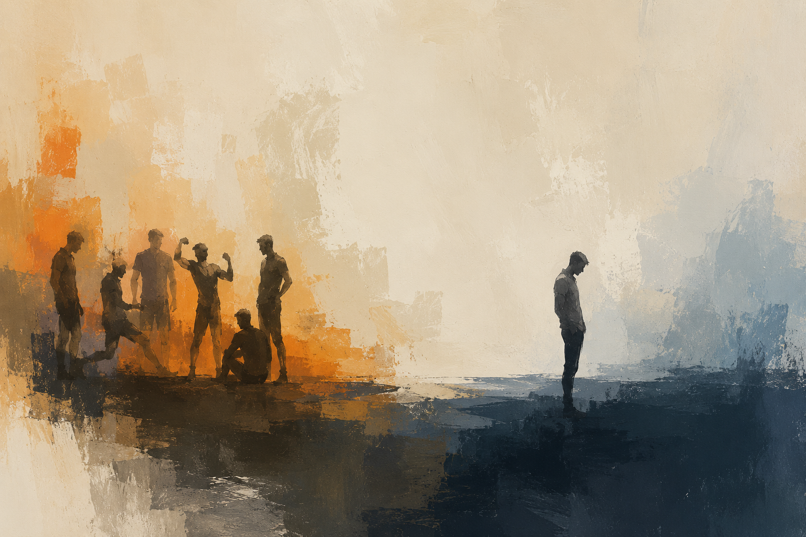

The Disappearing Flex

I've had this observation for a while now and I can't tell if it's fully true or if I just grew up and stopped seeing it. But ordinary men used to casually display strength all the time. Not gym rats, not athletes, just regular guys.
I remember brothers meeting each other and immediately flexing their arms for no reason. Trying to lift the heaviest thing in the room. Arm wrestling at tables during weddings or family gatherings. Fathers grabbing your wrist and saying "you got stronger", fathers joining those pointless flex competitions. Shoving each other for fun, someone lifting heavy bags just because another guy is watching (which still is pretty common, so maybe we can rule that one out).
And the weird thing is nobody seemed self-conscious about it. The strongest guy flexed, the skinny guy flexed, even the guy with a belly flexed. Sometimes the belly itself was part of the flex. It wasn't aesthetic in the modern sense. It wasn't about looking optimised. It was more like: "this is my body, this is what it can do!"
Now this feels rather rare.
Men still care about fitness, maybe more than ever, but the energy changed. The modern version is more aesthetic, more individualised, more online. Strength still exists, but it feels less casually social than it used to.
And I don't think male status displays disappeared at all. Across history, and honestly across species, men constantly find ways to display themselves once there is an arena to do it. That behaviour does not just evaporate in one generation. It probably transformed. The flex changed mediums.
The Old Casual Flex
What stands out when I think back on it is how low-stakes it all was. Nobody trained seriously, nobody had optimised diets, nobody knew about hypertrophy or looksmaxxing. Kids just existed physically. They climbed things, carried things, fell, got hurt, healed, then randomly compared strength with whoever was nearby.
You'd pick up a rock or some useless heavy object and suddenly it became a competition. Not a hostile one either, more that participation was the ritual. Even if you were the weakest you'd still join.
I was usually the weakest among the older boys around me because I was the youngest. They would tangle and trip me just for fun because I was the easiest target. It annoyed me constantly, but I still enjoyed it. I would try to do the same as often as I could (with a rather low success rate). Nobody sat down and formally explained hierarchy to us, but hierarchy quietly emerged anyway. That seems to happen naturally among males in almost every social species.
That kind of physical play exists across mammalian species. Anthropologists and developmental psychologists call it rough-and-tumble play. Rats do it. Primates do it. Human boys do it almost automatically. Research from developmental psychologist Anthony Pellegrini found that these interactions are usually not actual aggression at all, they're social games full of signals that say "this is still play": smiling, exaggerated movement, laughter, fake attacks. The competition is real, but the danger usually isn't.
And weirdly, this kind of play seems important for social development. Studies on juvenile mammals show that rough physical play helps develop social calibration and emotion regulation. Rats deprived of play literally become socially worse at reading other rats later in life. That sounds funny until you realise human brain chemistry is pretty close to that of a rat (at least as far as the clinical trials we can run go).
The old casual flex may have looked pointless, but it probably wasn't.
Strength Was Social Before It Became Aesthetic
One thing that feels different now is that modern fitness culture is extremely visible but strangely less communal. Back then (at least this is what I remember, though often the human brain remembers how it wanted things to be and not how things were) ordinary strength displays happened in living rooms, streets, schools, garages, terraces, random open spaces. No audience, no documentation, no optimisation.
Now it feels more performative. You track your run on Strava (I'm also guilty of this). You upload gym progress pictures, you optimise macros. You compare physiques online against people you've never met. The body becomes something closer to a profile.
And the internet changes the emotional atmosphere around all this. A failed flex in real life disappears immediately. A failed flex online can live forever. Kids today grow up exposed to elite physiques and global comparison before they even fully grow into their own bodies. That probably creates self-consciousness much earlier than before.
When we were younger, nobody knew enough to be embarrassed all the time. Now everyone knows too much.
Male Hierarchies Never Went Away
I don't buy the idea that male competition disappeared. It just became abstract. The old flex was physical: strength, roughhousing, lifting, wrestling. The new flex is often status, aesthetic, money, followers, social fluency. Even amongst kids things moved online: ranks, followers, group chats, social positioning. Though old generations have complained about the next one since at least Socrates, so this could just be BS my brain has a reason to support.
Evolutionary psychologists have written about how humans are surprisingly good at detecting physical strength from tiny cues like posture, shoulders, facial structure, and movement. For most of history, strength mattered socially. Stronger men were more useful in coalitions, conflict, hunting, labour, protection, and survival. So humans evolved to notice physical capability almost automatically.
But modern life rewards different things now. The guy with the highest status in a room is rarely the physically strongest man anymore. Usually it's the most connected, richest, funniest, smartest, or most socially fluent guy. So naturally the display systems adapted around that.
Physical dominance became one language among many instead of the main one.
Something Still Feels Lost
I don't think this is some "modern masculinity is doomed" argument. A lot of old male behaviour genuinely was unhealthy. And modern men are probably more emotionally articulate in many ways than previous generations. But I do think something valuable existed in low-stakes physical competition.
Men touched each other more casually. Strength existed socially instead of privately. Physical confidence wasn't reserved only for elite athletes or influencers. Ordinary men could participate in these little rituals without needing to look perfect.
People still compete constantly, maybe even more than before, but now the competition is more public, more permanent, more aesthetic.
Maybe The Flex Didn't Disappear
I still occasionally see glimpses of the old thing. A group of workers lifting something together and immediately turning it into a strength contest. Friends comparing grip strength randomly. Someone overcommitting while lifting furniture because another man is watching.
The impulse clearly still exists. But it feels quieter now. Less central. Less socially normal.
Maybe the casual flex belonged to a world where bodies were more present in daily life. Less mediated. Less curated. Less watched by invisible audiences all the time.
Or maybe I just grew up.
Either way, it's interesting that something which once felt almost automatic among ordinary men now feels noticeable enough to write an essay about.